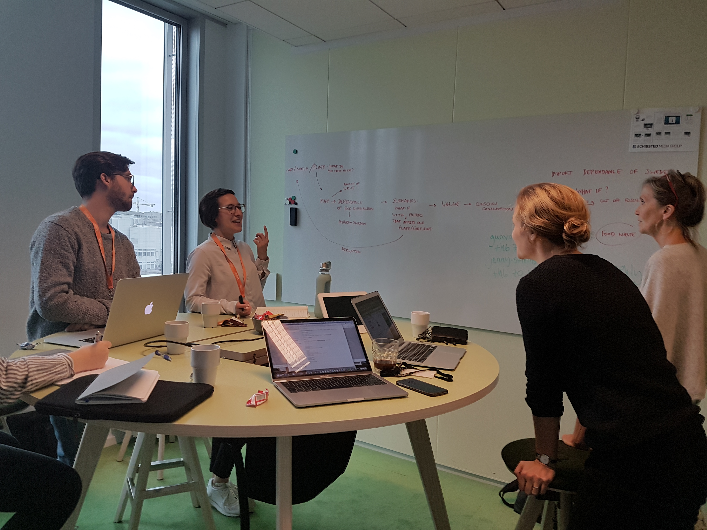
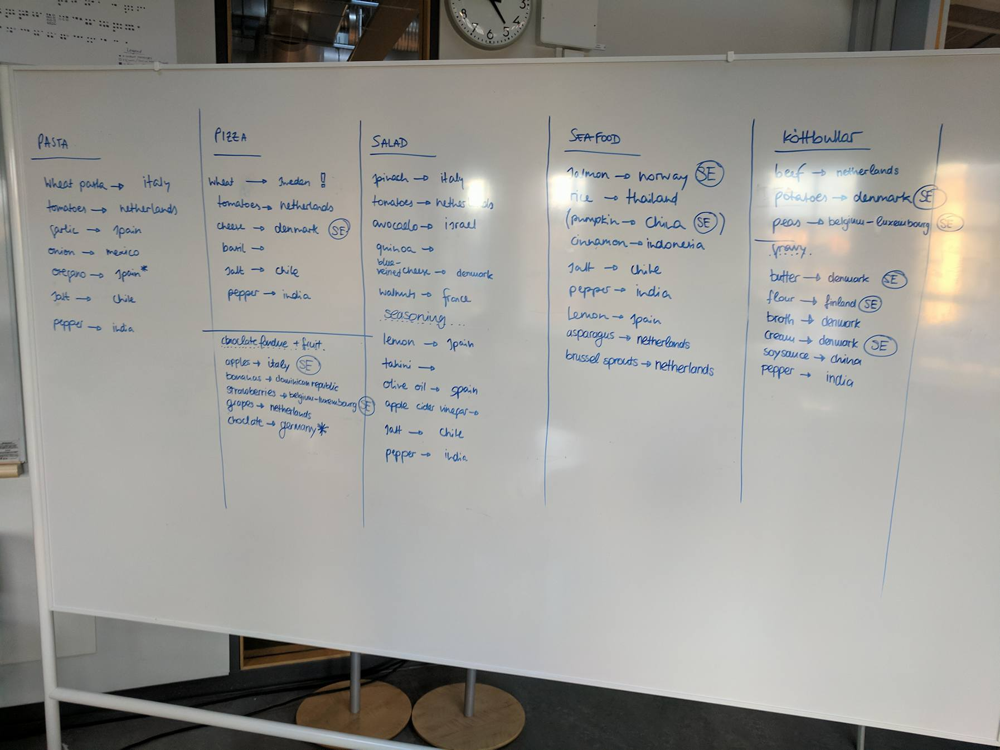
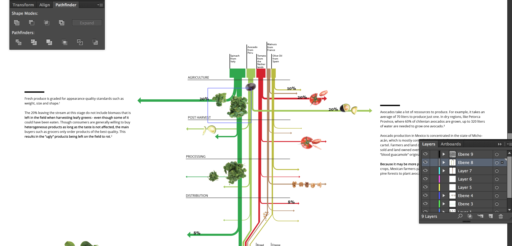

The Project
Svenska Dagbladet is Sweden’s 2nd largest news publication, together they wanted to create a piece of interactive info journalism so that they could inform their readers on the effects and causes of food waste in Sweden. This assignment took place over 2 weeks between October 12th-26th.

The Scope
We started out by visiting the SVD offices located right downtown Stockholm to begin our discussions with the reporters and journalists at SVD. SVD knew that they wanted for the story to have a major impact on the way people viewed the food that they threw away. We came up with a few ideas, the first being to track imports to Sweden from countries all over the world and to track how reliant Swede’s are on the global economy. The next idea was to centre the piece around global natural disasters and how they affect the global economy, including Sweden. Finally our last idea was to write an editorial piece about why Swedes should value their food more. In the end we all decided we like the idea of communicating the value of food the best and we wanted to inform readers about the journey food goes on to get to the consumer, only to be thrown away by them.
Research Phase
Our research phase lasted about 2 weeks, we looked into import/export patterns of Sweden, the individual value chains of the worlds most popular crops and individual eating habits of households in Europe and Sweden. With the info we collected we began filling whiteboards and quickly started to realize that what we had written looked similar to that of a recipe, this generated the idea of using common Swedish dishes as the main focus point of the graphic.
We did research into the most popular dishes of Sweden, the ingredients that make those dishes and then finally choosing the most important parts of those dishes and tracking their value chains all the way from the agriculture stage until it is consumed. After settling on the three dishes we felt best suited our needs based on their obvious cultural relevance to the Swedish people, it was time to get to work on the graphic.

Execution Phase
72% of SVD readers get their news on their phones so we knew that no matter what this graphic would have to look good on mobile. We started by having a brainstorm session about the way we could communicate the loss of food during production to the reader while still being strongly visual. We decided that a vertical scrolling graphic where arrows came off out to the sides to display loss, much like a sanky graph, would make it so the reader could view how much food is lost at each point of production while not compromising the goal of the story we wanted to tell with our graphic.

The vertical scrolling sanky graph made it easy now for us to display the data that we felt was important for users to know. We added individual call outs that explained why the food is being thrown out at the most wasteful stages to give the reader insight as to why they should value the food on their plate more than they currently do.
We had a tough choice in deciding how long the graphic should be, we wanted the reader to be engaged and feel immersed but we also wanted them to have to physically scroll for a long time to help try and really communicate the idea that their food has traveled so far for them, we ended up deciding on the latter for this. We worked with the files in illustrator, sketch and inDesign for this part of the project. After the 6 graphics were completed (3 for mobile, 3 for desktop) I got to work on creating the shell that the graphics would sit in for the time being until SVD decided how they wanted to lay them out within their own platform.

The Final Product and Last Thoughts
What we ended up with I think was a very detailed and educational graphic of the jouney food goes on all the way from crad;e to grave. We had to make certain sacrifices on the appearance of the graphic due to the short time span of this assignment which was only 2 weeks altogether: research taking up close to 75% of that time. SVD is currently in the midst of writing the accompanying article for this infographic and I will post the link here once the final product is live on their site! Until then, here is a link to the graphic on another site! Working with a client as large as SVD was an absolute pleasure and we are in the midst of making revisions and edits to the first version of our graphic, I’ll be sure to post the final piece once it is ready, until then stay tuned!
< Back